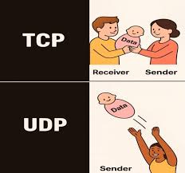
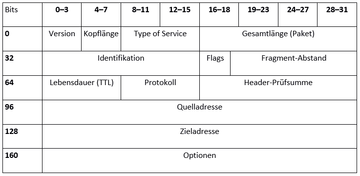

📶 Netzwerkpakete, TCP/UDP & OSI-Modell
i
Wenn du eine Webseite aufrufst, wird diese eine Anfrage in mehrere
Umschläge ineinander verpackt, Stück für Stück über das Netz
geschickt und beim Empfänger wieder ausgepackt. Genau das steckt
hinter OSI-Modell, TCP/UDP und Paket-Headern.
i
Wie Daten in Pakete verpackt (gekapselt) werden, was TCP von UDP unterscheidet, und wie das OSI-Modell mit dem in der Praxis verwendeten TCP/IP-Modell zusammenhängt.
📺 Vertiefung: OSI-Schichtenmodell einfach erklärt (IT & Medien einfach erklärt)
OSI-Modell vs. TCP/IP-Modell
i
OSI ist die "Theorie" (7 sauber getrennte Schichten), TCP/IP ist
die "Praxis" (4 gröbere Schichten, direkt an echten Protokollen
orientiert). Im Alltag sagt man trotzdem oft OSI-Begriffe wie
"Layer 3", auch wenn man eigentlich TCP/IP meint.
i
Die 7 OSI-Schichten im Detail
i
Englische Eselsbrücke für die Reihenfolge 1–7 (von unten nach
oben): Please Do Not
Throw Salami Pizza
Away – also Physical,
Data Link, Network,
Transport, Session,
Presentation, Application.
i
Merksatz (Layer 1 → 7): "Please Do Not Throw Salami Pizza Away." Jeder Anfangsbuchstabe steht für eine Schicht, in aufsteigender Reihenfolge von der Hardware (Layer 1) bis zur Anwendung (Layer 7).
| # | Schicht (DE) | Layer (EN) | Merkwort | Aufgabe | Beispiel |
|---|---|---|---|---|---|
| 1 | Bitübertragung | Physical | Please | Rohe Bits als Signale (elektrisch, optisch, Funk) übertragen | Kabel, Hub, WLAN-Funksignal, Spannungspegel |
| 2 | Sicherung | Data Link | Do | Rahmen (Frames) zwischen direkt verbundenen Geräten im selben Segment adressieren | Switch, Ethernet, MAC-Adresse |
| 3 | Vermittlung | Network | Not | Pakete über mehrere Netzwerke hinweg zum Ziel routen (logische Adressierung) | Router, IP-Adresse, ICMP |
| 4 | Transport | Transport | Throw | Ende-zu-Ende-Verbindung, Segmentierung, Zuverlässigkeit/Portadressierung | TCP, UDP, Portnummern |
| 5 | Sitzung | Session | Salami | Sitzungen zwischen zwei Anwendungen aufbauen, verwalten und beenden | NetBIOS, RPC, Login-Sitzung |
| 6 | Darstellung | Presentation | Pizza | Datenformat, Verschlüsselung und Kompression, damit beide Seiten sich verstehen | TLS/SSL, JPEG, ASCII/Unicode |
| 7 | Anwendung | Application | Away | Schnittstelle zwischen Netzwerk und der eigentlichen Anwendung/dem Nutzer | HTTP, FTP, DNS, SMTP |
TCP vs. UDP
i
Bildlich: TCP ist wie eine Übergabe von Hand zu Hand - der
Empfänger nimmt aktiv entgegen und bestätigt den Erhalt. UDP ist
wie etwas einfach hinüberzuwerfen: der Sender schickt es los und
kümmert sich nicht darum, ob es tatsächlich ankommt.
i

| TCP | UDP | |
|---|---|---|
| Verbindung | verbindungsorientiert (Handshake) | verbindungslos |
| Zuverlässigkeit | garantiert (Bestätigungen, Neuübertragung) | keine Garantie |
| Reihenfolge | garantiert geordnet | keine Garantie |
| Geschwindigkeit | etwas langsamer (mehr Overhead) | schnell, schlank |
| Typische Nutzung | HTTP/HTTPS, SSH, E-Mail, Dateitransfer | DNS, Video-Streaming, VoIP, Online-Gaming |
TCP-Drei-Wege-Handschlag (Handshake)
Kapselung: wie ein Paket aufgebaut ist
i
Wie eine russische Matroschka-Puppe: die eigentlichen Daten
stecken innen, umhüllt von einem TCP/UDP-Umschlag, der wiederum
in einem IP-Umschlag steckt, der wiederum in einem
Ethernet-Umschlag steckt.
i
Jede Schicht kümmert sich nur um ihre eigene Aufgabe: Ethernet bringt das Paket zum nächsten Gerät im selben Netzsegment (per MAC-Adresse), IP bringt es über Router hinweg zum richtigen Zielnetzwerk, TCP/UDP sorgt dafür, dass es beim richtigen Programm (Port) ankommt.
Der IP-Header im Detail (Bit für Bit)
i
Das ist der genaue Bauplan des "IP-Umschlags" von oben - jedes
Feld hat eine feste Position und Grösse. TTL und Quell-/Zieladresse
sind hier besonders relevant, die kennst du bereits aus anderen
Teilen dieses Moduls.
i

Ein Standard-IPv4-Header ist 20 Byte (160 Bit) lang, ohne optionale
Felder. TTL wird bei jedem Router-Hop um 1
verringert (verhindert Endlos-Kreisen), Protokoll
gibt an, was im Datenteil steckt (z.B. 6 = TCP, 17 = UDP), und
Flags/Fragment-Offset
regeln die Fragmentierung, falls ein Paket unterwegs zu gross für ein
Netzsegment ist.
Wichtige Ports (Beispiele)
| Port | Dienst | Protokoll |
|---|---|---|
| 53 | DNS | UDP (meist), TCP bei grossen Antworten |
| 80 | HTTP | TCP |
| 443 | HTTPS | TCP |
| 22 | SSH | TCP |
| 25 | SMTP (E-Mail-Versand) | TCP |
| 3389 | RDP (Remotedesktop) | TCP |
🧩 Puzzle: OSI-Schichten in die richtige Reihenfolge bringen
i
Ziehe die Karten per Drag&Drop um, oder nutze die
Auf/Ab-Pfeile - sortiert von Schicht 1 (unten, Hardware) bis
Schicht 7 (oben, Anwendung).
i
🧩 Zuordnen: Port ↔ Dienst
i
Klick zuerst auf einen Port links, dann auf den passenden
Dienst rechts. Bei korrekter Zuordnung bleiben beide grün
markiert, bei falscher Zuordnung kannst du es sofort erneut
versuchen.
i
0 / 6 Paare gefunden